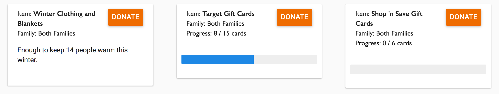
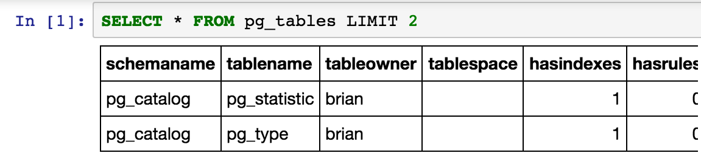
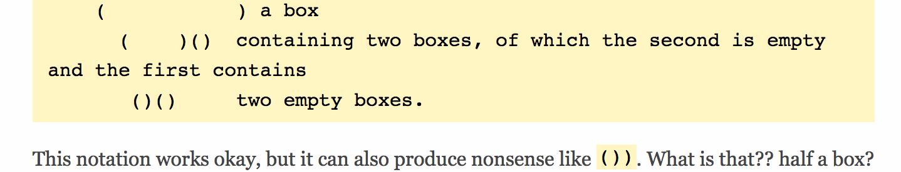
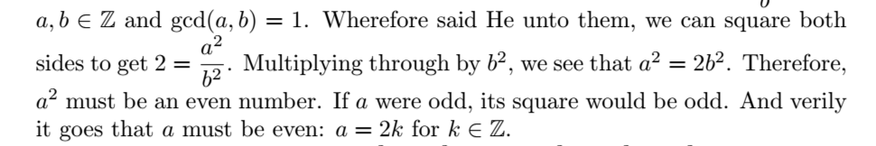
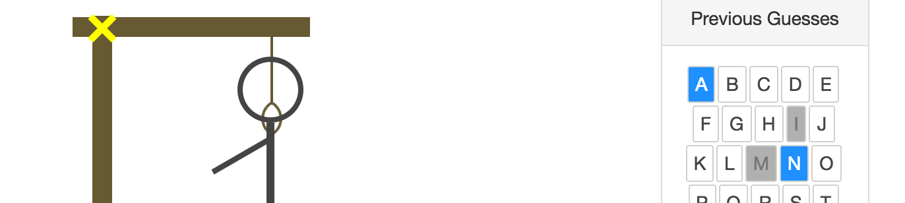

# Projects
-
Small, offline-capable React app to perform a set of calculations used by physicians. Created together with my wife. code at
bgschiller/abg-interpreter
-
An Alfred workflow to save a screenshot to Trello and put a shareable link on your clipboard. Also supports screen recordings, text, and any file.
-
A Python library to safely build powerful SQL queries from untrusted JSON structures.
-
A static site supporting a donated goods drive put on by my Synagogue. It uses a google doc as a CMS so that it can be updated by less technically-inclined people. code at
bgschiller/refugee-wishlist

-
Interact with your PostgreSQL db via a jupyter notebook.

-
Simple Flask app offering hangman games via an api. Intended to be extended with a frontend, as with my react-hangman. Maintains the game state in a secure cookie (so, no database). code at
bgschiller/hangman-api
-
Advent calendar of code challenges. Post your solution and see others' solutions once you've solved a problem. code at
bgschiller/lc101-advent-of-code

-
A LaTeX package to avoid the tedium of coming up with synonyms for 'Therefore' in your mathematical writing.

-
Hangman app using my hangman-api. Built with React and Redux. code at
bgschiller/react-hangman

-
d3.js site to highlight specific countries. code at
bgschiller/highlight-world-map
# Tutorials
-
Used to explain the topic to Nielsen executives
-
Presented at the start of several successive quarters at Western Washington University
-
Presented at TopOPPS to development team
-
Presented at LaunchCode's ReBootU
-
Presented at LaunchCode 101